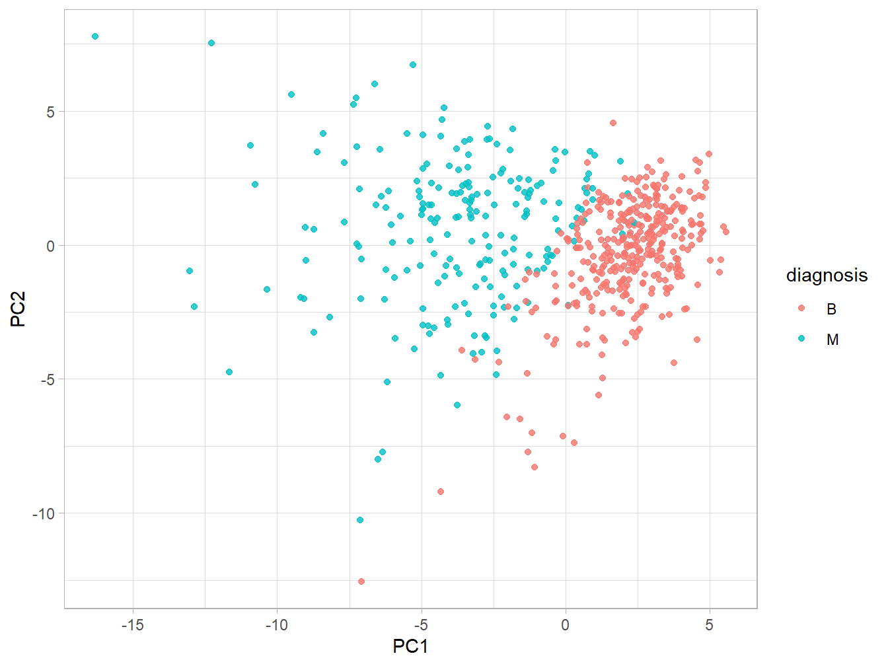
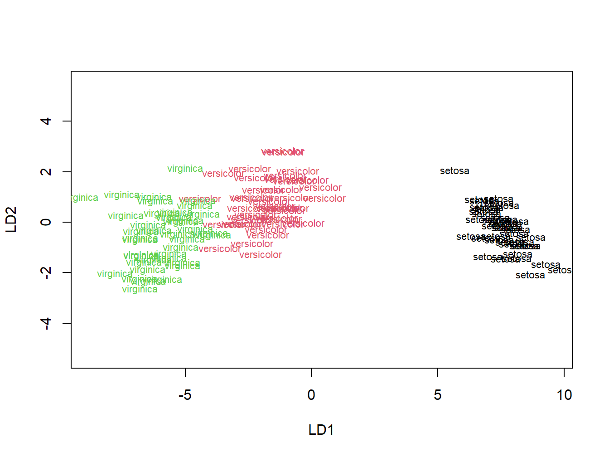

5 Wisconsin Breast-Cancer Data
Los datos de cáncer de mama Wisconsin están disponibles en diversas plataformas. Por ejemplo, en Kaggle. Estos corresponden a mediciones obtenidas “de una imagen digitalizada de un aspirado con aguja fina (FNA) de una masa mamaria.” La variables describen las características de los núcleos celulares presentes en la imagen. Este conjunto de datos es muy didáctico y permite estimar si los tumores son malignos o benignos, conociendo la media, desviación estándar y valor máximo de 10 mediciones de cada una de las 10 características:
- radius (mean of distances from center to points on the perimeter)
- texture (standard deviation of gray-scale values)
- perimeter
- area
- smoothness (local variation in radius lengths)
- compactness (perimeter^2 / area - 1.0)
- concavity (severity of concave portions of the contour)
- concave points (number of concave portions of the contour)
- symmetry
- fractal dimension (“coastline approximation” - 1)
El resultado es un problema de clasificación binario (\(Y =\) diagnosis) con 30 variables predictoras. La muestra de 569 pacientes corresponde a 357 en la clase B y 212 en la clase M. Los datos están disponibles en este repositorio y también en Aula Global.
library(caret)
library(ggplot2)
library(readr)
library(dplyr)
library(gridExtra)
library(ROCR)
## Cargar datos ----
wiscon <- read_csv("data_breast_cancer_wisconsin.csv")
# no nos interesan los ID, y la última columna no se ha cargado bien
wiscon <- wiscon[, 2:32]
# la respuesta es diagnosis: B = benign, M = malignant
wiscon$diagnosis <- as.factor(wiscon$diagnosis)
df <- as.data.frame(wiscon)
str(df)## 'data.frame': 569 obs. of 31 variables:
## $ diagnosis : Factor w/ 2 levels "B","M": 2 2 2 2 2 2 2 2 2 2 ...
## $ radius_mean : num 18 20.6 19.7 11.4 20.3 ...
## $ texture_mean : num 10.4 17.8 21.2 20.4 14.3 ...
## $ perimeter_mean : num 122.8 132.9 130 77.6 135.1 ...
## $ area_mean : num 1001 1326 1203 386 1297 ...
## $ smoothness_mean : num 0.1184 0.0847 0.1096 0.1425 0.1003 ...
## $ compactness_mean : num 0.2776 0.0786 0.1599 0.2839 0.1328 ...
## $ concavity_mean : num 0.3001 0.0869 0.1974 0.2414 0.198 ...
## $ concave points_mean : num 0.1471 0.0702 0.1279 0.1052 0.1043 ...
## $ symmetry_mean : num 0.242 0.181 0.207 0.26 0.181 ...
## $ fractal_dimension_mean : num 0.0787 0.0567 0.06 0.0974 0.0588 ...
## $ radius_se : num 1.095 0.543 0.746 0.496 0.757 ...
## $ texture_se : num 0.905 0.734 0.787 1.156 0.781 ...
## $ perimeter_se : num 8.59 3.4 4.58 3.44 5.44 ...
## $ area_se : num 153.4 74.1 94 27.2 94.4 ...
## $ smoothness_se : num 0.0064 0.00522 0.00615 0.00911 0.01149 ...
## $ compactness_se : num 0.049 0.0131 0.0401 0.0746 0.0246 ...
## $ concavity_se : num 0.0537 0.0186 0.0383 0.0566 0.0569 ...
## $ concave points_se : num 0.0159 0.0134 0.0206 0.0187 0.0188 ...
## $ symmetry_se : num 0.03 0.0139 0.0225 0.0596 0.0176 ...
## $ fractal_dimension_se : num 0.00619 0.00353 0.00457 0.00921 0.00511 ...
## $ radius_worst : num 25.4 25 23.6 14.9 22.5 ...
## $ texture_worst : num 17.3 23.4 25.5 26.5 16.7 ...
## $ perimeter_worst : num 184.6 158.8 152.5 98.9 152.2 ...
## $ area_worst : num 2019 1956 1709 568 1575 ...
## $ smoothness_worst : num 0.162 0.124 0.144 0.21 0.137 ...
## $ compactness_worst : num 0.666 0.187 0.424 0.866 0.205 ...
## $ concavity_worst : num 0.712 0.242 0.45 0.687 0.4 ...
## $ concave points_worst : num 0.265 0.186 0.243 0.258 0.163 ...
## $ symmetry_worst : num 0.46 0.275 0.361 0.664 0.236 ...
## $ fractal_dimension_worst: num 0.1189 0.089 0.0876 0.173 0.0768 ...
## - attr(*, "problems")= tibble [569 x 5] (S3: tbl_df/tbl/data.frame)
## ..$ row : int [1:569] 1 2 3 4 5 6 7 8 9 10 ...
## ..$ col : chr [1:569] NA NA NA NA ...
## ..$ expected: chr [1:569] "33 columns" "33 columns" "33 columns" "33 columns" ...
## ..$ actual : chr [1:569] "32 columns" "32 columns" "32 columns" "32 columns" ...
## ..$ file : chr [1:569] "'data_breast_cancer_wisconsin.csv'" "'data_breast_cancer_wisconsin.csv'" "'data_breast_cancer_wisconsin.csv'" "'data_breast_cancer_wisconsin.csv'" ...Vamos a crear una partición independiente (con una semilla) de test y aplicar todo lo estudiado hasta ahora.
set.seed(666)
train.ID <- createDataPartition(df$diagnosis, p = 0.7, list = FALSE)
train_df <- df[train.ID, ]
test_df <- df[-train.ID, ]¡A por ello!
5.1 Reducción de la dimensión
Aunque queda fuera del aprendizaje supervisado, como posible solución a la alta dimensionalidad de los datos, en caret es posible aplicar técnicas no supervisadas que permiten reducir la dimensión. Una de ellas es el Análisis de Componentes Principales (PCA, por sus siglas en inglés). Veamos cómo hacer esto con la función preProcess:
# en este caso estamos reduciendo la cantidad de variables iniciales
# a solamente ¡2!
preProc.res <- preProcess(df, method = c('pca'), pcaComp = 2)
df.pca <- predict(preProc.res, df)
head(df.pca, 7)## diagnosis PC1 PC2
## 1 M -9.184755 -1.946870
## 2 M -2.385703 3.764859
## 3 M -5.728855 1.074229
## 4 M -7.116691 -10.266556
## 5 M -3.931842 1.946359
## 6 M -2.378155 -3.946456
## 7 M -2.236915 2.687666Veamos qué tan separadas quedan las clases ahora:
ggplot(df.pca, aes(x = PC1, y = PC2, group = diagnosis)) +
geom_point(aes(color = diagnosis ), alpha = 0.8) +
theme_light()
Si volvemos a hacer la partición de los datos (mismos índices para el test);
# Ajustemos nuestros modelos con los datos transformados:
train_df <- df.pca[train.ID, ]
test_df <- df.pca[-train.ID, ]entonces, podemos aplicar todos los modelos estudiados a un conjunto de datos de menor complejidad. Esto es una ganancia en tiempo de cómputo… ¿será también en términos predictivos? Intenta también representar la frontera de decisión correspondiente a cada método, usando como base la ya conocida decision_bound.
El LDA también puede ser visto como un método de reducción de la dimensión (a lo sumo # clases - 1). La visión de Fisher del discriminante lineal contempla encontrar la mejor proyección de los datos (a una dimensión inferior) que permita separar bien las clases. Esto se logra persiguiendo la mayor dispersión posible en los datos. Una buena introducción a esta visión del LDA está disponible en las lecciones de Prof. Olga Veksler. También recomiendo este post de Matthias Döring.
Veamos un ejemplo con los datos iris:
library(MASS)
df <- iris
set.seed(123)
train.ID <- createDataPartition(df$Species, p = 0.8, list = FALSE)
train_df <- df[train.ID, ]
test_df <- df[-train.ID, ]
lda_iris <- MASS::lda(Species ~ ., train_df)
lda_iris## Call:
## lda(Species ~ ., data = train_df)
##
## Prior probabilities of groups:
## setosa versicolor virginica
## 0.3333333 0.3333333 0.3333333
##
## Group means:
## Sepal.Length Sepal.Width Petal.Length Petal.Width
## setosa 4.9800 3.3700 1.4650 0.2400
## versicolor 5.9400 2.7700 4.2325 1.3275
## virginica 6.6375 3.0125 5.6225 2.0700
##
## Coefficients of linear discriminants:
## LD1 LD2
## Sepal.Length 0.787581 0.05173815
## Sepal.Width 1.605418 -2.45346114
## Petal.Length -2.144011 0.80572094
## Petal.Width -2.909670 -2.51645779
##
## Proportion of trace:
## LD1 LD2
## 0.9902 0.0098El campo Coefficients of linear discriminants indica los coeficientes de cada discriminante. Por ejemplo, el primer discriminante lineal (LD1) es la combinación lineal:
(0.79*Sepal.Length) + (1.60*Sepal.Width) + (-2.14*Petal.Length) + (-2.90*Petal.Width)El campo Proportions of trace describe la proporción de varianza entre clases que es explicada por los discriminantes lineales sucesivos. En este caso, LD1 explica 99% de la varianza, o sea, solo con la primera componente podríamos ser capaces de discriminar con buena precisión. Veamos la proyección en el espacio LD1 vs. LD2:
plot(lda_iris, col = as.integer(train_df$Species))
Vemos que LD1 permite separar bien ambas clases, aunque hay un poco de superposición entre virginica y versicolor. Finalmente, en una sola dimensión (la definida por LD1):
plot(lda_iris, dimen = 1, type = "b")